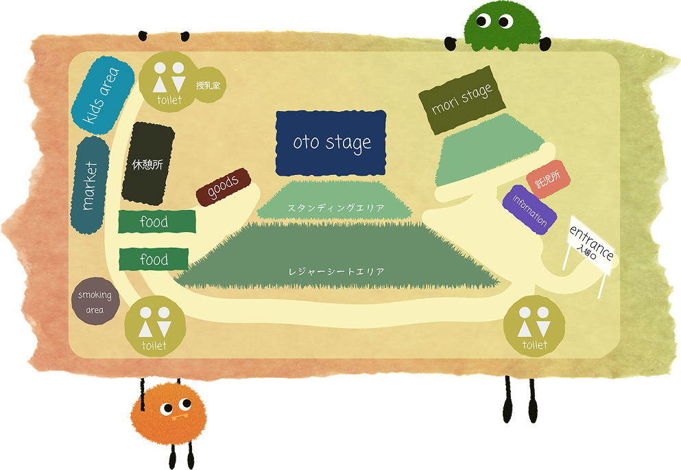

会場内の案内マップがこちらです。
託児所や授乳室もご用意しています。



会場 日向山
〒368-0071 埼玉県秩父郡横瀬町芦ケ久保999-99
会場へのアクセス
■電車でお越しの方
【電車】池袋駅からー特急ラビューちちぶ
（有料特急西武秩父行）約1時間15分ー横瀬駅下車
横瀬駅よりシャトルバス（7㎞）約20分
■お車でお越しの方
新潟線/関越自動車道
鶴ヶ島ＩＣから約1時間10分（44.4ｋｍ）
駐車場のご案内
有料駐車場：1日1台 3,000円
会場まで徒歩5分。10時から利用可能となります。

シャトルバスのご案内
■往路：西武鉄道 横瀬駅→ 日向山臨時駐車場
■復路：日向山臨時駐車場→西武鉄道 横瀬駅
（所要時間：共に片道 約20分）
※道路状況により時間は変更となる場合がございます。
出発時間
■往路：8:00～12:00まで随時運行予定
■復路：16:00～随時運行予定
販売方法
■当日券のみ
料金：¥1,000-（片道）※
※小学生未満無料
販売場所：バス乗車場所
赤ちゃん連れの方も安心してご利用いただけるように
ベービーカー置き場もご用意しています。